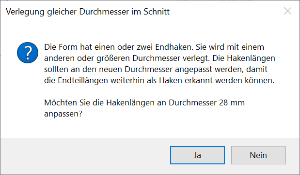
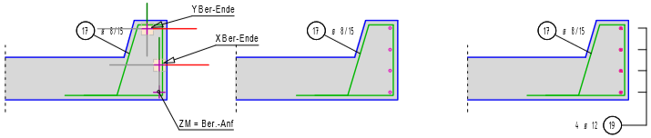
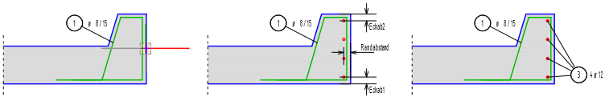
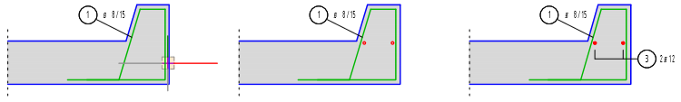
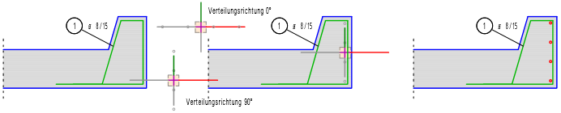
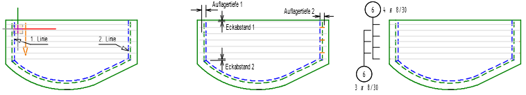
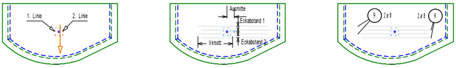
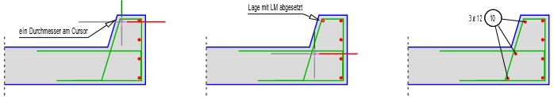

")
")
·Alternativ: Mittlere Maustaste auf Durchmesser im Schnitt.
·Wenn AutFol (untere Menüleiste) eingestellt ist, werden die Verlegungen in Folie 4 abgelegt.
Verlegen gleicher Biegeform-Durchmesser mit konstantem Abstand (wie bei einer Staffel). ISBCAD führt Sie automatisch durch die benötigten Arbeitsschritte, beginnend mit der Auswahl einer Biegeform [WähFor].
·Die folgende Meldung erscheint nach dem Bestätigen des Verlegefaktors, wenn eine neue Position mit einem größeren Durchmesser erzeugt wird:
 |
Sie haben die Möglichkeit, die Hakenlängen der Auszugsform an den neuen Durchmesser anzupassen. Um die Hakenlängen anzupassen, wählen Sie Ja. Wenn die aktuellen Hakenlängen nicht angepasst werden sollen, wählen Sie Nein.
Siehe: Hakenlängen an den Stabdurchmesser anpassen
1.Biegeform für die Verlegung wählen [WähFor]
Führen Sie einen der folgenden Schritte aus:
a)Wählen Sie Vkn an, wenn Sie die Verlegung mit einer anderen Verlegung mit derselben Form verknüpfen wollen. Klicken Sie die Verlegung an. [Welche Verlegung].
Siehe auch: Verlegungen verknüpfen
b)Wählen Sie Vkn aus, wenn Sie die Form nicht verknüpfen wollen. [Welche Form].
Wenn Sie nach einer Verlegung die Verlegeform wechseln möchten, schalten Sie den Verknüpfungsmodus aus:  .
.
§Klicken Sie ein Element der Auszugsform an. Sie können auch die Texte anklicken. Für die Verlegung steht dann nur die Information der Positionsnummer und der Durchmesser (wenn schon verlegt) zur Verfügung.
-Wenn Sie eine Verlegung oder Positionierung anklicken, steht neben der Positionsnummer auch der Durchmesser, die Anzahl bzw. der Abstand als auch die Verlegebreite zur Verfügung.
-Sie können die Positionsnummer auch direkt in die Eingabe eingeben. Bestätigen Sie mit der Eingabetaste.
2.Durchmesser und Abstand bzw. Anzahl angeben [ø/ab n]
Stababstand bzw. Anzahl der Stäbe können automatisch anhand des erforderlichen Stahlquerschnittes (erf.as(cm²/m bzw. erf.As(cm²)) und des gewählten Stabdurchmessers ermittelt werden.
|
Hinweis: |
|
Bei der Formstahlverlegung wird nach Eingabe der Verlegebereichslänge der wahre Abstand zwischen den Stäben ermittelt. Wird dabei der zulässige Mindestabstand unterschritten, werden Sie durch eine Meldung darauf hingewiesen. Ergänzende Hinweise unterstützen Sie bei der Problemlösung. Wenn Sie die Meldung ignorieren, können Sie auch mit den gewählten Einstellungen weiterarbeiten. |

§Wählen Sie die gewünschte Berechnungsart oder übernehmen Sie die Werte aus einer vorhandenen Verlegung (Schaltflächen unter erf.As(cm²/m)):
|
Berechnet automatisch den Stababstand für den pro Meter erforderlichen Stahlquerschnitt (erf.as(cm²/m). Das Resultat kann sofort übernommen oder individuell angepasst werden. Der resultierende Stahlquerschnitt wird zum Vergleich angezeigt [vorh.As(cm²)]. Hinweis: Die Angabe des erforderlichen Stahlquerschnittes ist optional. Wird kein Wert oder 0 angegeben, muss der Abstand der Stäbe im Folgenden versuchsweise eingegeben werden, bis der resultierende Stahlquerschnitt [vorh.As(cm²)] den gewünschten Wert hat. |
|
Berechnet automatisch die für den erforderlichen Stahlquerschnitt (erf.As(cm²)) benötigte Mindestanzahl der Stäbe. Das Resultat kann sofort übernommen oder individuell angepasst werden. Der resultierende Stahlquerschnitt wird zum Vergleich angezeigt [vorh.As(cm²)]. Hinweis: Die Angabe von erf.As(cm²) ist optional. Wird kein Wert oder 0 angegeben, muss die Anzahl der Stäbe im Folgenden versuchsweise eingegeben werden, bis der resultierende Stahlquerschnitt [vorh.As(cm²)] den gewünschten Wert hat. An der Positionierung wird auch der nominelle Abstand angeschrieben. |
|
Übernahme des Durchmessers, Abstands bzw. der Anzahl aus einer vorhandenen Verlegung. [So wie welche Verlegung?]. Klicken Sie die Verlegung an, deren Werte Sie übernehmen möchten. Je nach Berechnungsart wird Abstand oder Anzahl aktiviert. Die Abfrage wechselt zu [KOR?] (s. weiter unten). Hinweis: Eine Verlegung in Form von z. B. "0 ⌀ 12" kann nicht angeklickt werden. Die Verlegung muss eine Verlegeanzahl enthalten. |


§Geben Sie den erforderlichen Stahlquerschnitt ein und bestätigen Sie die Angabe [erf.As(cm²/m) bzw. erf.As(cm²)].
§Wählen Sie in der Liste unter ø per Mausklick den Stabdurchmesser.
Wenn der erforderliche Stahlquerschnitt eingegeben wurde, berechnet ISBCAD automatisch den bestmöglichen Wert für den Abstand bzw. die Stabanzahl und schlägt diesen unter Abstand(>0) bzw. Anzahl(>=1)) vor. Der resultierende Stahlquerschnitt wird unter vorh.As(cm²/m) angezeigt.
§Wenn der resultierende Stahlquerschnitt vorh.As(cm²/m) größer/gleich dem erforderlichen Stahlquerschnitt erf.As(cm²/m) ist, können Sie den Wert für Abstand(>0) bzw. Anzahl(>=1) bestätigen.
Alternativ können Sie einen anderen Wert angeben (und bestätigen) und den resultierenden Stahlquerschnitt vorh.As(cm²/m) prüfen.
§Prüfen Sie, ob das Resultat Ihren Anforderungen entspricht.
Wollen Sie die Angaben ändern. [KOR]?
|
Korrigieren Sie Ihre Angaben beginnend mit erf.As(cm²/m) (erforderlicher Stahlquerschnitt) oder verwenden Sie |
|
Der resultierende Stahlquerschnitt wird beibehalten. |

 (untere Menüleiste).
(untere Menüleiste).
3.Verlegebereich definieren [BerDef]
Wie bei der Staffelverlegung kann die Darstellung der Verlegung in verschiedener Form erfolgen. Entweder Sie stellen den ersten, einen mittleren und den letzten Durchmesser, die ersten und letzten drei oder alle Durchmesser dar. Zusätzlich besteht die Möglichkeit, z. B. bei einer großen Anzahl von Durchmessern, eine gewählte Auswahl der Durchmesser zu zeichnen. Wenn noch keine Form gewählt wurde, werden Sie durch eine Meldung darüber informiert.
Bevor oder während Sie eine Staffel verlegen, können Sie die Darstellung der Staffel individuell anpassen oder eine vorgegebene Form auswählen. Die Darstellungsoption stehen Ihnen bis zur Bestätigung des Verlegefaktors zur Verfügung.

§Wählen Sie im Funktionsbereich eine Darstellungsoption.
§Eine weitere Möglichkeit besteht darin, die Stäbe mittels der Option beliebige D. der Verlegung auszuwählen, die gezeichnet werden sollen.
Diese Schaltfläche erscheint, nachdem Sie einen Verlegebereich definiert haben und während die Abfrage des Verlegefaktors aktiv ist. Wenn Sie diese Schaltfläche anklicken, werden wieder alle Stäbe gezeigt. §Klicken Sie die Stäbe an, die nicht gezeigt werden sollen. [Welche Eisen nicht darstellen]. Die ausgewählten Stäbe werden markiert. Wenn Sie einen markierten Stab erneut anklicken, wird die Markierung wieder aufgehoben.
§Bestätigen Sie die Darstellung mit Rechtsklick oder |


 .
.Nachdem Sie einen Verlegebereich definiert haben und während die Abfrage des Verlegefaktors aktiv ist, können Sie die Darstellung der Verlegung ändern.
Anfang und Ende der Verlegestaffel bearbeitenDiese Optionen stehen erst zur Verfügung, wenn der Durchmesser und der Abstand angegeben wurden. [Ø ab/n]
|

So wird's gemacht:
§Wählen Sie über die Schaltflächen oben links (unter der Eingabezeile) die Art der Verlegung.
|
Der Verlegebereich wird über die X- und Y-Koordinate des Anfangs- und Endpunktes beschrieben. |
|
Der Verlegebereich wird auf eine Linie/Kreis = Rand bezogen. Am Kreis werden die Stäbe radial verlegt. |
|
Der Verlegebereich wird rechtwinklig von einer Bezugslinie = Rand weg definiert. |
Freie Definition des Verlegebereiches. |
|
|
Der Verlegebereich wird in zwei Staffeln aufgeteilt, die kammartig ineinander greifen. Anfang und Ende werden durch zwei gegenüberliegende Linien bestimmt. |
|
Der Verlegebereich wird durch zwei parallele Linien gebildet. Die Stäbe werden mittig darauf angeordnet. |
|
Es wird kein Verlegebereich definiert, sondern die Stäbe werden einzeln mit festgelegter Reihenfolge bzw. völlig frei verlegt. |


Verlegeoptionen:

Der Verlegebereich wird über die X- und Y-Koordinate des Anfangs- und Endpunktes beschrieben. Liegt der Anfangs- oder Endpunkt der Staffel an einer schrägen Linie, ist es ratsam, das Arbeitskoordinatensystem zu drehen. Alternativ können Sie auch die Hilfsfunktion S [Schnitt] verwenden, um den Anfangs- und/oder Endpunkt an den Schnittpunkt zweier Linien zu setzen. Tippen Sie in das Eingabefeld ein s ein und klicken Sie anschließend die Bezugslinie an. Mit Rechtsklick können Sie die Betondeckung übernehmen. Wenn Sie bei einem Parameter (X oder Y) für den Anfangs- und/oder Endpunkt die Hilfsfunktion verwenden, achten Sie darauf, auch beim anderen Parameter die Hilfsfunktion einzugeben!
[XBer-Anf]
§Klicken Sie eine Bezugslinie für den Anfangspunkt an.
Zu der angeklickten Linie wird ein Wert addiert oder subtrahiert, der sich aus dem halben Stabdurchmesser der gewählten Form plus einem Zentimeter (1/2 Ø + 1cm) zusammensetzt.
Die Linienkennung und die voreingestellte Betondeckung werden in die Eingabe geschrieben.
§Geben Sie nach der Linienkennung den Wert für die Betondeckung mit dem entsprechenden Vorzeichen ein und bestätigen Sie mit der Eingabetaste.
Mit Rechtsklick können Sie die voreingestellte Betondeckung übernehmen. Wenn kein Abstand angegeben werden soll, geben Sie als Differenz 0 (Null) ein.
[YBer-Anf]
§Gehen Sie für die Angabe des Y-Wertes wie bei [XBer-Anf] beschrieben vor.
Die Zeichenmarke wird an den Anfangspunkt gesetzt.
[XBer-Ende]; [YBer-Ende]
§Klicken Sie Bezugslinien für den Endpunkt wie bei [XBer-Anf] beschrieben an.
[Verlege-Faktor]
Die Angabe des Verlege-Faktors ist für die jeweils erste Verlegung erforderlich. Handelt es sich um eine Wiederholung einer, an anderer Stelle gezählten, Verlegung, können Sie auch den Wert 0 (Null) eingeben.
Wenn diese Verlegung in der Stahlliste berücksichtigt werden soll, geben Sie einen Wert ≥1 ein. Der Auszugstext wird nach jeder Änderung aktualisiert.
Im linken Abfragebereich wird Ihnen der aktuell eingestellte Bauteilfaktor angezeigt. Diesen können Sie ggf. unter [Formst | nBautl | Voreinstellg] ändern.
§Geben Sie den Verlege-Faktor ein, mit dem die Anzahl der verlegten Stäbe multipliziert werden soll, oder klicken Sie einen Wert in der Dropdown-Liste an und bestätigen Sie mit Rechtsklick.
Sie können sofort einen weiteren Verlegebereich definieren.
Beispiel:
 |

Der Verlegebereich wird auf eine Linie/Kreis = Rand bezogen.
[Welcher Rand]
§Klicken Sie den Rand auf der Seite an, auf der die Staffel verlegt werden soll.
[Randabstand]
Als Randabstand wird der Wert der Betondeckung [nom c] + 1cm + 1/2 Ø vorgeschlagen. Mit Rechtsklick können Sie den in der Eingabe stehenden Wert übernehmen.
§Geben Sie einen Wert ein. Wenn dieser negativ ist, wird der Abstand zur anderen Seite gemessen. Schließen Sie die Eingabe mit der Eingabetaste ab.
[Eckab1]; [Eckab2]
Mit negativen Werten wird die Staffel über die Ecke hinaus verlängert.
Eine Bezugnahme auf andere Linien ist nicht möglich. Die Eckabstände beziehen sich auf die angeklickte Randlinie. Sie werden zur Linienmitte hin positiv gemessen.
§Geben Sie jeweils beliebige Werte für die Abstände am Anfang und am Ende ein. Schließen Sie die Eingabe jeweils mit der Eingabetaste ab.
[Verlege-Faktor]
Die Angabe des Verlege-Faktors ist für die jeweils erste Verlegung erforderlich. Handelt es sich um eine Wiederholung einer, an anderer Stelle gezählten, Verlegung, können Sie auch den Wert 0 (Null) eingeben.
Wenn diese Verlegung in der Stahlliste berücksichtigt werden soll, geben Sie einen Wert ≥1 ein. Der Auszugstext wird nach jeder Änderung aktualisiert.
Im linken Abfragebereich wird Ihnen der aktuell eingestellte Bauteilfaktor angezeigt. Diesen können Sie ggf. unter [Formst | nBautl | Voreinstellg] ändern.
§Geben Sie den Verlege-Faktor, mit dem die Anzahl der verlegten Stäbe multipliziert werden soll, ein oder klicken Sie einen Wert in der Dropdown-Liste an und bestätigen Sie mit Rechtsklick.
Sie können sofort einen weiteren Verlegebereich definieren.
Beispiel:
 |

Der Verlegebereich wird rechtwinklig auf die Mitte einer Bezugslinie (= Rand) definiert.
[Welcher Rand]
§Klicken Sie den Rand auf der Seite an, auf der die Staffel angeordnet werden soll.
[Randabstand]
Als Randabstand wird der Wert der Betondeckung [nom c] + 2 cm vorgeschlagen
§Geben Sie einen Abstand zum Rand ein und bestätigen Sie mit der Eingabetaste oder übernehmen Sie den vorgeschlagenen Wert mit Rechtsklick.
[Staffelbreite]
§Geben Sie die Staffelbreite ein und bestätigen Sie mit der Eingabetaste oder übernehmen Sie den vorgeschlagenen Wert mit Rechtsklick.
Wenn Sie die Positionsnummer durch Anklicken einer vorhandenen Verlegung angegeben haben, wird hier die dort gespeicherte Verlegetiefe vorgeschlagen. Sie können den Wert mit Rechtsklick bestätigen.
[Verlege-Faktor]
Die Angabe des Verlege-Faktors ist für die jeweils erste Verlegung erforderlich. Handelt es sich um eine Wiederholung einer, an anderer Stelle gezählten, Verlegung, können Sie auch den Wert 0 (Null) eingeben.
Wenn diese Verlegung in der Stahlliste berücksichtigt werden soll, geben Sie einen Wert ≥1 ein. Der Auszugstext wird nach jeder Änderung aktualisiert.
Im linken Abfragebereich wird Ihnen der aktuell eingestellte Bauteilfaktor angezeigt. Diesen können Sie ggf. unter [Formst | nBautl | Voreinstellg] ändern.
§Geben Sie den Verlege-Faktor ein, mit dem die Anzahl der verlegten Stäbe multipliziert werden soll, oder klicken Sie einen Wert in der Dropdown-Liste an und bestätigen Sie mit Rechtsklick.
Sie können sofort einen weiteren Verlegebereich definieren.
Beispiel:
 |
Freie Definition des Verlegebereiches.
[Verlegebreite]
Die Staffel wird mit den zurzeit eingestellten Parametern am Cursor dargestellt. Wenn Sie bei Wahl der Position auf eine Verlegung klicken, wird die Breite dieser Verlegung vorgeschlagen. Mit Rechtsklick können Sie den vorgeschlagenen Wert übernehmen.
§Geben Sie die gewünschte Breite ein und bestätigen Sie mit der Eingabetaste.
[Verlegemaßstab]
Es wird der Maßstab vorgeschlagen, in dem die Auszugsform gezeichnet ist. Unter der Abfrage werden die Standardmaßstäbe in einer Dropdown-Liste angeboten. Klicken Sie auf den gewünschten Maßstab, um diesen zu übernehmen. Sie können auch eine Linie anklicken, dann wird der Maßstab der Linie übernommen.
§Geben Sie den Maßstab in das Eingabefeld ein und bestätigen Sie mit der Eingabetaste.
[Verteilungsrichtung]
§Geben Sie den Winkel direkt in das Eingabefeld ein und bestätigen Sie mit der Eingabetaste.

|
||||||


[Lage]
§Schieben Sie die Staffel an die gewünschte Stelle und legen Sie die Staffel mit Linksklick ab.
[Verlege-Faktor]
Die Angabe des Verlege-Faktors ist für die jeweils erste Verlegung erforderlich. Handelt es sich um eine Wiederholung einer, an anderer Stelle gezählten, Verlegung, können Sie auch den Wert 0 (Null) eingeben.
Wenn diese Verlegung in der Stahlliste berücksichtigt werden soll, geben Sie einen Wert ≥1 ein. Der Auszugstext wird nach jeder Änderung aktualisiert.
Im linken Abfragebereich wird Ihnen der aktuell eingestellte Bauteilfaktor angezeigt. Diesen können Sie ggf. unter [Formst | nBautl | Voreinstellg] ändern.
§Geben Sie den Verlege-Faktor ein, mit dem die Anzahl der verlegten Stäbe multipliziert werden soll, oder klicken Sie einen Wert in der Dropdown-Liste an und bestätigen Sie mit Rechtsklick.
Sie können sofort einen weiteren Verlegebereich definieren.
Beispiel:
 |

Der Verlegebereich wird in zwei Staffeln aufgeteilt. Anfang und Ende werden durch zwei gegenüberliegende Linien bestimmt. Die Verteilung der Durchmesser erfolgt abwechselnd zur einen und zur anderen Linie.
[1.Linie]; [2.Linie]
Die erste angeklickte Linie wird als Bezugslinie für die Staffeln benutzt.
§Klicken Sie die zwei Linien an, zwischen denen die Feldbewehrung verlegt werden soll.
[Eckab1]; [Eckab2]
Mit Rechtsklick können Sie den vorgeschlagenen Maßstab übernehmen.
Der Eckabstand1 wird an der zuerst angeklickten Linie in Verlegerichtung (positiv) gemessen. Soll der Staffelanfang über die Linie hinaus verschoben werden, müssen Sie den Wert negativ eingeben.
Der Eckabstand2 wird vom Ende der zuerst angeklickten Linie in Richtung auf den Anfangspunkt (positiv) gemessen.
§Geben Sie jeweils einen Wert für den Abstand ein und bestätigen Sie mit der Eingabetaste.
[Aufl.1]; [Aufl.2]
Für die Auflagertiefe werden immer pauschal 10cm vorgeschlagen. Mit Rechtsklick können Sie den vorgeschlagenen Maßstab übernehmen.
Positive Werte gehen in Richtung Auflager.
§Geben Sie jeweils einen Wert für die Auflagertiefe ein und bestätigen Sie mit der Eingabetaste.
[Verlege-Faktor]
Die Angabe des Verlege-Faktors ist für die jeweils erste Verlegung erforderlich. Handelt es sich um eine Wiederholung einer, an anderer Stelle gezählten, Verlegung, können Sie auch den Wert 0 (Null) eingeben.
Wenn diese Verlegung in der Stahlliste berücksichtigt werden soll, geben Sie einen Wert ≥1 ein. Der Auszugstext wird nach jeder Änderung aktualisiert.
Im linken Abfragebereich wird Ihnen der aktuell eingestellte Bauteilfaktor angezeigt. Diesen können Sie ggf. unter [Formst | nBautl | Voreinstellg] ändern.
§Geben Sie den Verlege-Faktor ein, mit dem die Anzahl der verlegten Stäbe multipliziert werden soll, oder klicken Sie einen Wert in der Dropdown-Liste an und bestätigen Sie mit Rechtsklick.
Sie können sofort einen weiteren Verlegebereich definieren.
Beispiel:
 |

Der Verlegebereich wird durch zwei parallele Linien gebildet. Die Stäbe werden mittig dazwischen angeordnet.
[1.Linie]; [2.Linie]
Der Verlegebereich bezieht sich auf die zuerst angeklickte Linie.
§Klicken Sie zwei Linien an.
[Eckab1]; [Eckab2]
Der erste bzw. letzte Stab wird markiert. Der Verlegebereich wird um das Maß der Betondeckung nach innen vorgeschlagen. Mit negativen Werten können Sie den Verlegebereich über die Länge der ersten Linie hinaus verlängern.
§Bestätigen Sie den Vorschlagswert mit Rechtsklick oder geben Sie einen abweichenden Betrag ein und bestätigen mit der Eingabetaste.
[Versatz]
Durch die Angabe eines Versatzes werden zwei ineinander verzahnte Staffeln erzeugt.
§Bestätigen Sie den Vorschlag (0 = kein Versatz) mit Rechtsklick oder geben Sie ein Maß für den Längsversatz ein und bestätigen mit der Eingabetaste.
[Ausmitte]
Positive Werte verschieben den Schwerpunkt der Staffel(n) in Richtung der zweiten angeklickten Linie.
§Bestätigen Sie den Vorschlag (0 = keine Ausmitte) mit Rechtsklick oder geben Sie einen Wert für die Verschiebung ein und bestätigen mit der Eingabetaste.
[Verlege-Faktor]
Die Angabe des Verlege-Faktors ist für die jeweils erste Verlegung erforderlich. Handelt es sich um eine Wiederholung einer, an anderer Stelle gezählten, Verlegung, können Sie auch den Wert 0 (Null) eingeben.
Wenn diese Verlegung in der Stahlliste berücksichtigt werden soll, geben Sie einen Wert ≥1 ein. Der Auszugstext wird nach jeder Änderung aktualisiert.
Im linken Abfragebereich wird Ihnen der aktuell eingestellte Bauteilfaktor angezeigt. Diesen können Sie ggf. unter [Formst | nBautl | Voreinstellg] ändern.
§Geben Sie den Verlege-Faktor ein, mit dem die Anzahl der verlegten Stäbe multipliziert werden soll, oder klicken Sie einen Wert in der Dropdown-Liste an und bestätigen Sie mit Rechtsklick.
Sie können sofort einen weiteren Verlegebereich definieren.
Beispiel:
 |

Es wird kein Verlegebereich definiert, sondern die Stäbe werden einzeln mit festgelegter Reihenfolge bzw. völlig frei verlegt.
[Maßstab]
Der Maßstab wird vorgeschlagen, in dem der Auszug dargestellt ist. Sie können den vorgeschlagenen Wert mit Rechtsklick bestätigen.
§Geben Sie den Maßstab an, in dem Sie die Stäbe verlegen möchten und bestätigen Sie mit der Eingabetaste.
[BerWi]
§Geben Sie den Winkel an, um den die Verlegerichtung gedreht werden soll.
[in Reihe]
0 = Nein |
Bedeutet, dass jeder Stab für sich an einer beliebigen Stelle abgelegt werden kann. |
1 = Ja |
Heißt, dass die Stäbe exakt mit konstantem Abstand in einer Reihe verlegt werden. Als Wert wird der Betrag aus der Eingabe für Abstand genommen, auch wenn hier die Anzahl gewählt wurde. |
§Tippen Sie die entsprechende Ziffer in die Eingabe und bestätigen Sie mit der Eingabetaste. Mit Rechtsklick können Sie den Vorschlag bestätigen.
[Lage ankl.]
In Reihe |
Jeder Klick verlegt einen Stab. Die Verlegerichtung wird durch die Lage des Cursors in Bezug auf den ersten Stab bestimmt. Ist der Bereichswinkel 0°, dann wird nach rechts verlegt, wenn der Cursor rechts vom ersten Stab liegt. Wenn die Verlegung nach links erfolgen soll, müssen Sie sich mit dem Cursor links vom ersten Stab befinden. |
Nicht in Reihe |
An jede Stelle, die Sie anklicken, wird ein Stab abgelegt. Ab dem 2. Durchmesser können Sie den Orthogonalmodus aktivieren, um nachfolgende Durchmesser orthogonal zum Systemwinkel zu verlegen. Halten Sie hierfür die Umschalttaste (Shift) beim Absetzen gedrückt. |
§Klicken Sie für jeden zu verlegenden Stab einmal die linke Maustaste.
§Beenden Sie die Verlegung mit Rechtsklick.
[Verlege-Faktor]
Die Angabe des Verlege-Faktors ist für die jeweils erste Verlegung erforderlich. Handelt es sich um eine Wiederholung einer, an anderer Stelle gezählten, Verlegung, können Sie auch den Wert 0 (Null) eingeben.
Wenn diese Verlegung in der Stahlliste berücksichtigt werden soll, geben Sie einen Wert ≥1 ein. Der Auszugstext wird nach jeder Änderung aktualisiert.
Im linken Abfragebereich wird Ihnen der aktuell eingestellte Bauteilfaktor angezeigt. Diesen können Sie ggf. unter [Formst | nBautl | Voreinstellg] ändern.
§Geben Sie den Verlege-Faktor ein, mit dem die Anzahl der verlegten Stäbe multipliziert werden soll, oder klicken Sie einen Wert in der Dropdown-Liste an und bestätigen Sie mit Rechtsklick.
Sie können sofort einen weiteren Verlegebereich definieren.
Beispiel:
 |
Siehe auch:
·Verlegung bearbeiten (Gleiche Durchmesser in Schnittdarstellung)